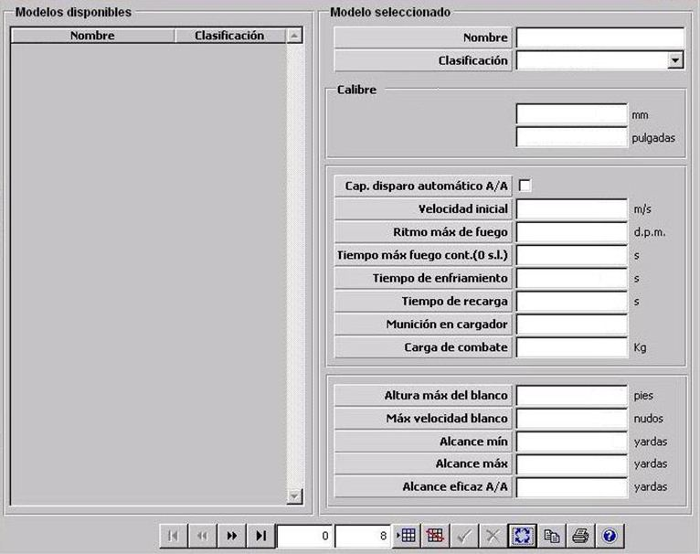

Munición

Descripción de los parámetros:
Calibre: Este parámetro determina el calibre de la munición de este cañón. Es tenido en cuenta para calcular al probabilidad de impacto de disparos de este cañón sobre una unidad.
Unidades: mm
Rango: 0 – 999
ó bien:
Unidades: pulgadas
Rango: 0 – 39,33
Capacidad de Disparo Automático A/A: Este parámetro determina si el cañón tiene capacidad de disparar en automático. Si se establece esta capacidad el operador podrá seleccionar hacer disparo automático a blancos posibles o manual seleccionando un blanco.
Velocidad Inicial: Este parámetro determina la velocidad inicial del proyectil disparado.
Unidades: metros / segundo
Rango: 0 – 9999
Ritmo Máximo de Fuego: Este parámetro determina el número de disparos por minuto que realiza el cañón cuando dispara ráfagas. Es tenido en cuenta para calcular al probabilidad de impacto de disparos de ráfagas de este cañón sobre una unidad.
Unidades: d.p.m.
Rango: 0 – 9999
Tiempo Máximo de Fuego Continuo: Este parámetro determina el tiempo máximo que puede estar haciendo fuego ininterrumpidamente este cañón. Transcurrido este tiempo el cañón interrumpe el fuego y pasa a enfriamiento. Si se introduce cero, el cañón podrá estar indefinidamente en fuego hasta agotar la munición del cargador, sin pasar a enfriamiento.
Unidades: segundos
Rango: 0 – 9999
Tiempo de Enfriamiento: Este parámetro determina el tiempo que estará el cañón en enfriamiento antes de poder iniciar una nueva ráfaga.
Unidades: segundos
Rango: 0 – 9999
Tiempo de Recarga: Este parámetro determina el tiempo que tarda el cañón en recargar el cargador de munición cada vez que se vacía.
Unidades: segundos
Rango: 0 – 9999
Munición en Cargador: Esta parámetro determina la cantidad máxima de munición que pueden ser alojados en el cargador del cañón.
Unidades: ---
Rango: 0 – 9999
Carga de Combate: Este parámetro determina la carga explosiva de la munición de cañón. Es tenido en cuenta para la evaluación de los daños producidos por el impacto de proyectiles de este cañón en una unidad.
Unidades: kilogramos
Rango: 0 – 999,99
Altura Máxima del Blanco: Este parámetro determina la máxima altura de un blanco para que pueda ser disparado con este cañón.
Unidades: pies
Rango: 0 – 99999
Velocidad Máxima del Blanco: Este parámetro determina la máxima velocidad de un blanco para que pueda ser disparado con este cañón.
Unidades: nudos
Rango: 0 – 9999
Alcance Máximo: Este parámetro determina la distancia máxima a la que se puede hacer fuego con este cañón.
Unidades: yardas
Rango: 0 – 999999
Alcance Mínimo: Este parámetro determina la distancia mínima a la que se puede hacer fuego con este cañón.
Unidades: yardas
Rango: 0 – 999999
Alcance Eficaz A/A: Este parámetro determina el alcance eficaz del cañón haciendo fuego contra blancos aéreos. Es tenido en cuenta para calcular al probabilidad de impacto de disparos de este cañón sobre el blanco.
Unidades: yardas
Rango: 0 – 999999